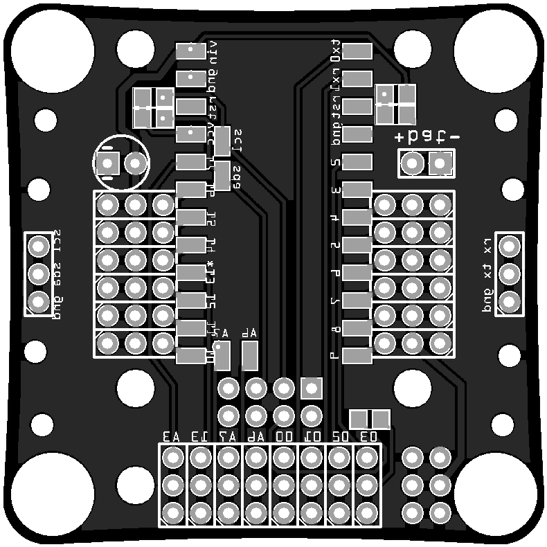

What’s on the PCB?¶
Published on 2016-03-02 in Tote HaD.
Time to talk a little bit about the new printed circuit board and what will be there available on it. Let’s take a look at the bottom of it (note that this image is mirrored – that is, it’s as if the board was transparent and you are looking from the top):
The two rows of pads in the middle are for the Arduino Pro Mini module, with ATmega328p on it, running at 8Mhz. There are also some additional pads for the I²C and analog-only pins.
The two rows of 3-pin headers running along the Pro Mini are servo sockets. Since the servo plugs are relatively bulky, I had to put them close to the center of the board, so that the moving legs don’t collide with them. This is pretty much the same as with regular Tote.
The 4×2 header below the Pro Mini is for an ESP-01 module. I decided to give up on controlling this robot with a TV remote, and instead will go for WiFi, mostly because that makes it easier to use it for more advanced stuff. If you want, you can still connect IR sensor to one of the free pins, and add the code for it, but by default the control will be through the esp8266 chip.
Below that the 8×3 header breaks out all the free pins from the Arduino, so that you can connect your own things to them. Each pin also has a 3.3V power and ground pins next to it, because sensors are likely to need that. The pins A6 and A7 are analog-only, and the pins 03 and 02 have interrupts. Also, pin 13 has a build-in LED on the Pro Mini.
The 3-pin headers on both sides of the robots break out the I²C bus and the serial interface for the ESP8266. The I²C bus is used for internal communication and has pullup resistors to 3.3V, but you can also connect your own hardware to that, as long as the addresses don’t clash. The serial is mostly for debugging purposes (it can’t be used for flashing the esp, because of the pullups on the I²C line). The I²C line and power are also broken out on the 6-pin header in the lower right corner.
In the upper right corner there is a battery plug, and a voltage divider connected to the A7 analog pin. If populated, it can be used to monitor the battery voltage – but then of course you can’t use A7 for your own sensors. The ESP8266 also has the possibility of monitoring its own power voltage, so I will see how well that works, and if it’s better, I will leave that unpopulated.
The circle on the left side of the board is a place for a capacitor, to protect against brownouts. Next to it are the two resistors acting as I²C pullups.
And that’s it. It’s not very complex – to be honest, the PCB is mostly to just keep all the things together and act as the robot’s body.